1. 直方图
直方图常常用来统计一个集合中，元素的某个属性分布，如某区域黑莓树的高度分布直方图：
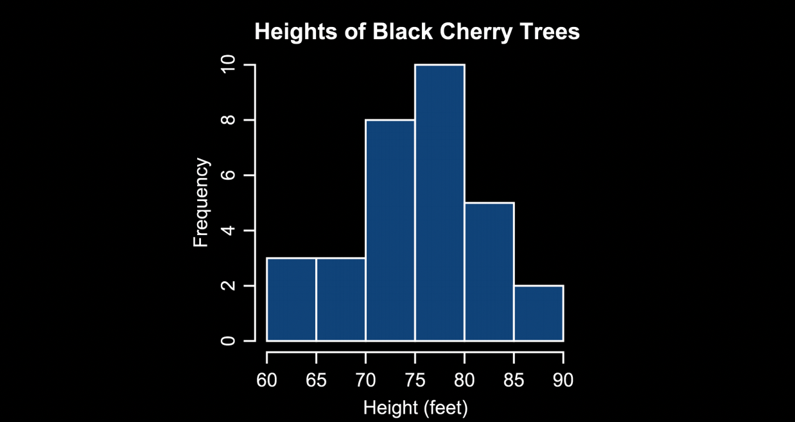
在 Lecture 1 中我们介绍过，一张数字图像由若干像素构成，每个像素用多个 bits/bytes 表示，具体表示形式与图片格式有关。那么相应地，通过观察图像中某个属性的分布，我们也可以得到一些对于图像本身的理解。一个最简单的例子就是 luminosity histogram。
2. luminosity histogram
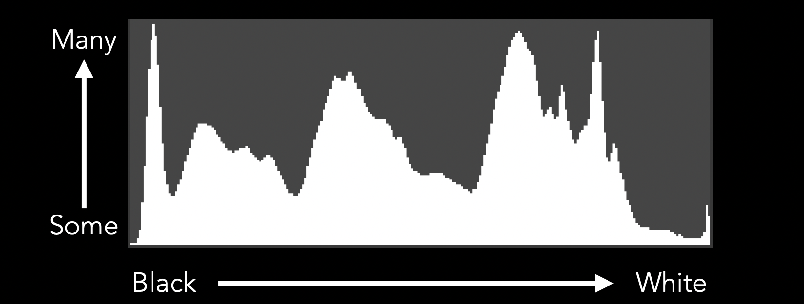
luminosity histogram 的横坐标表示亮度，最左边是相机能捕捉到的最黑的颜色，值为 0；最右边是相机能捕捉到的最白的颜色，通常值为 255。纵坐标表示同一灰度值的像素个数。整个直方图的高通常固定，因此直方图上矩形的相对高度表示的是不同灰度值上像素个数的相对关系。
一张全黑的图，在它上面只有值为 0 的像素，因此它的直方图在坐标轴最左边有一个尖峰 (spike)，其它地方都为空：
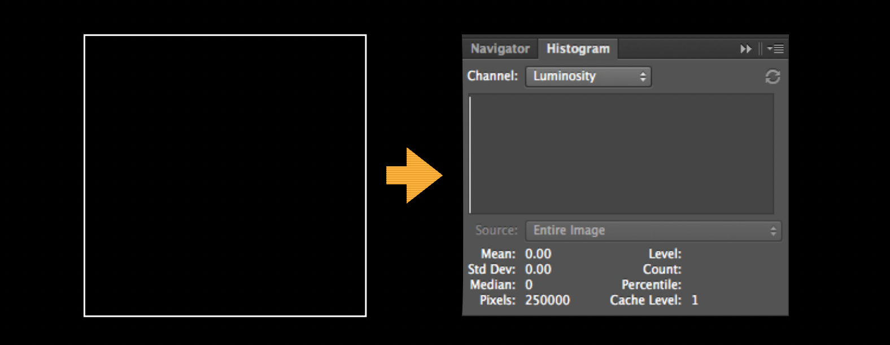
一张全白的图，在它上面只有值为 255 的像素，因此它的直方图在坐标轴最右边有一个尖峰 (spike)，其它地方都为空：
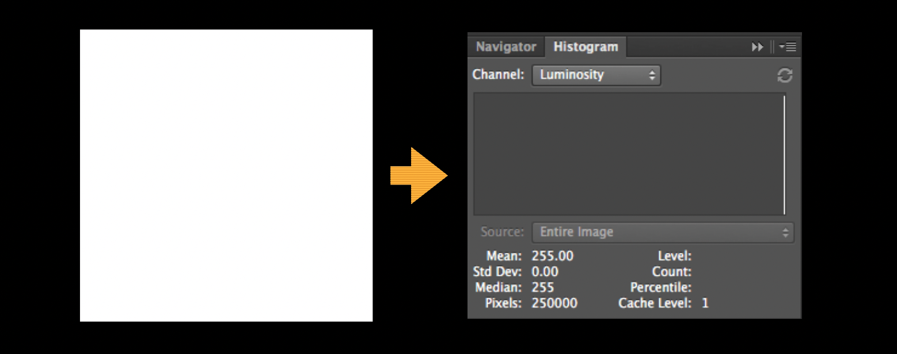
2.1 合理曝光
那么，一张合理曝光的照片，它的 luminosity histogram 应该长什么样呢？也许你会认为，如果一张照片的整个直方图都能均匀地分布在可衡量的灰度范围内，且在 0 和 255 灰度处没有像素或仅有极少量像素，就是合理曝光，如下图所示：
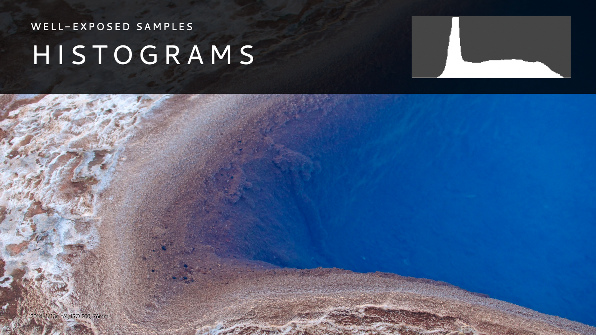
图中的海水和沙滩都既不太黑，也不太白，细节清晰，无论从直方图分析，还是直接关上这张照片，都很难找到其曝光的不合理之处。再看下面这张雪山风景图：
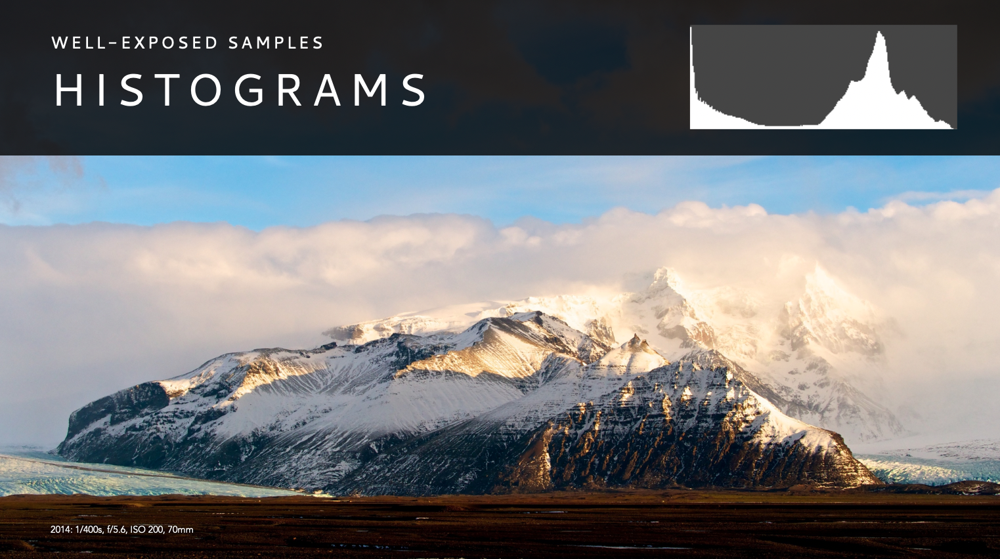
这张图的底部是一片草甸，整体偏暗，甚至有全黑的部分，但它并不是画面中的主体，观众不会花过多的注意力在上面；画面中间靠右是雪山顶部，十分明亮，接近全白，除此之外，雪山体的其它部分、天空中的云朵，展现不同程度的白，细节、纹理还比较清晰，总体来说，因为照片主体本身的特点使得它比较高调 (high tone)，但这并不代表它的曝光有问题。从其 luminosity histogram 中可以看到，它并没有真正过曝的像素，既它的白色区域没有丢失任何细节；它有较多低曝 (underexposed) 像素，但这些像素在画面中的重要性较低，且没有明显地聚成块，因此不影响画面的总体呈现。
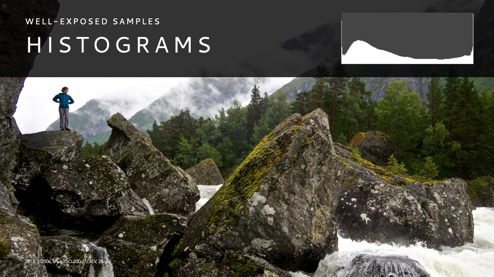
这张图与前两张图的不同在于它的高光比，画面中既存在全黑的区域 (左下角的岩石) 也存在全白的区域 (左上角的云层或右下角的水流)，但整体画面的细节 (人物、岩石、森林) 清晰，同样是一张好照片。

尽管上图绝大多数区域是白色，甚至从直方图上能看出画面中存在全白的区域，但仔细看云层的纹理、细节并没有消失，且右上方厚厚的云层与左下方的草甸岩石形成对比，突出山脊处风景的壮观，依然是一张好照片。
有时候再一些商业照片的拍摄中，会刻意将背景过曝或低曝，保证主体的合理曝光，如下图所示：
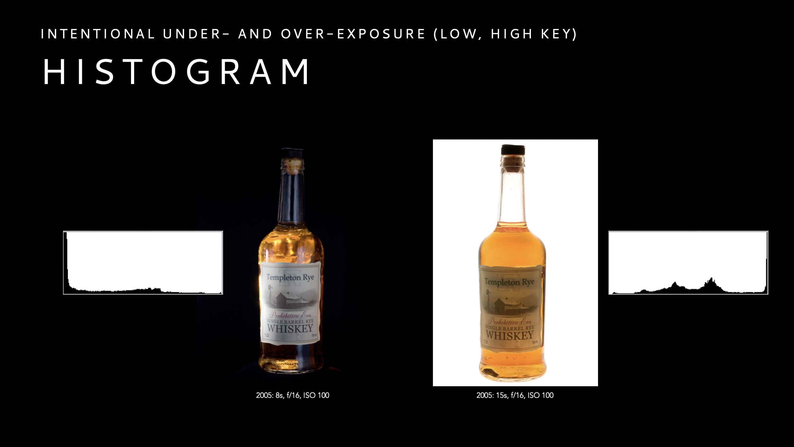
它们的 luminosity histogram 则呈现一边倒的形式。
小结：事实上并不存在固定的 luminosity histogram 模式 (pattern) 能保证照片的合理曝光。照片中的景物可能本身就是低色调 (low key) 或高色调 (high key)，只要能达到摄影师想表达的目的，画面看起来令人舒适，就可以称之为合理的曝光。
有时候，相机的电子屏幕并不能准确地告诉我们照片的细节是否已经丢失，我们可以使用 luminosity histogram 来判断；另外如果我们对照片本身的 luminosity histogram 整体模式有所预期，可以在拍完照片后用它做一次验证。
2.2 颜色与灰度
在 Lecture 1 中，我们了解到每个像素是由 3 种颜色组成，即 RGB，那么如何将每个像素的 RGB 转化成灰度？
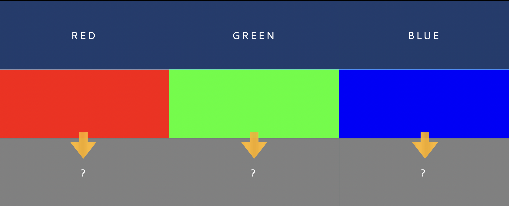
在 Lecture 2 中，我们介绍过人眼中的视锥细胞 (cones) 负责感受颜色，其中负责接收中长波长的视锥细胞能占总数的 90%，而负责接收短波长的视锥细胞则约为 10%。回顾下图：
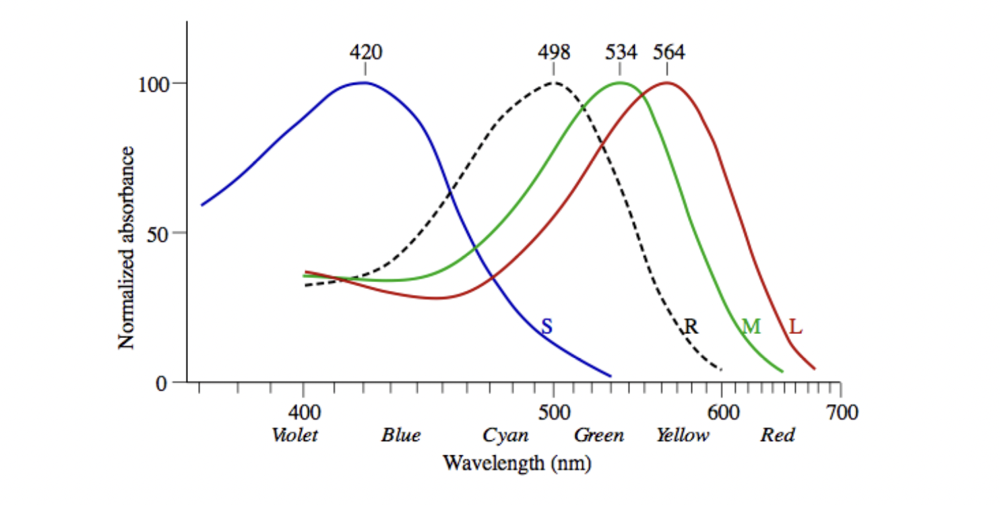
短、中、长波长的视锥细胞分别对应着蓝、绿、红光，因此绿光和红光对亮度的贡献较大，蓝光的贡献较小。
Note: 在英文中，luminance 指代实际光的亮度，luminosity 指代人眼感受到光的亮度
根据人类整体肉眼的平均视锥细胞分布，我们可以获得如下 luminosity 估算公式：
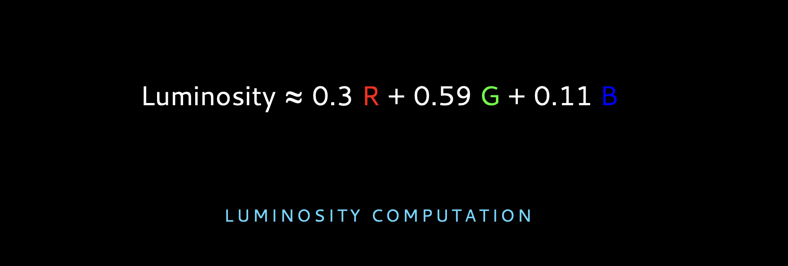
同样强度的红、绿、蓝分别能为对应的 luminosity 贡献 30%、59%、11%，可以用下图直观地对比三者：
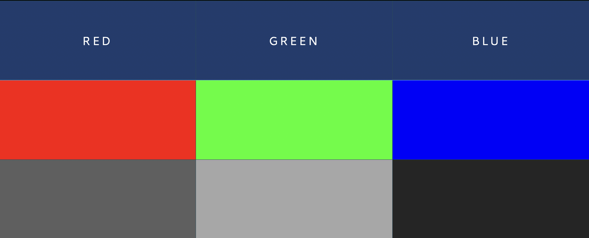
有了上述公式，我们就能在心中推算一张全红 (R=255, G=0, B=0) 图片的 luminosity histogram：
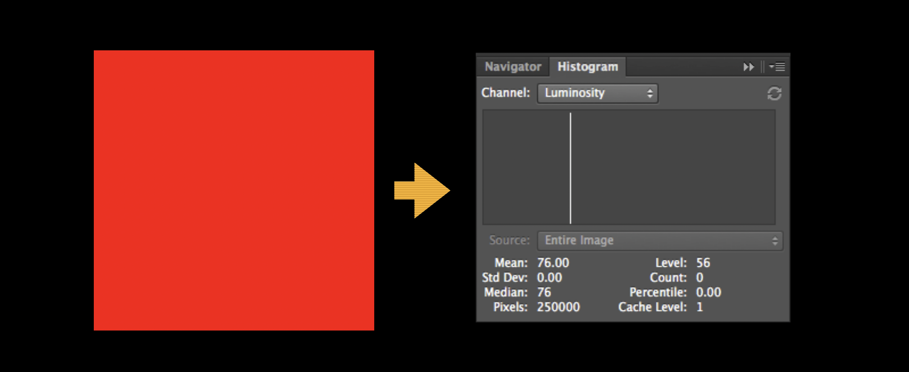
甚至能心算更复杂的图片的直方图：
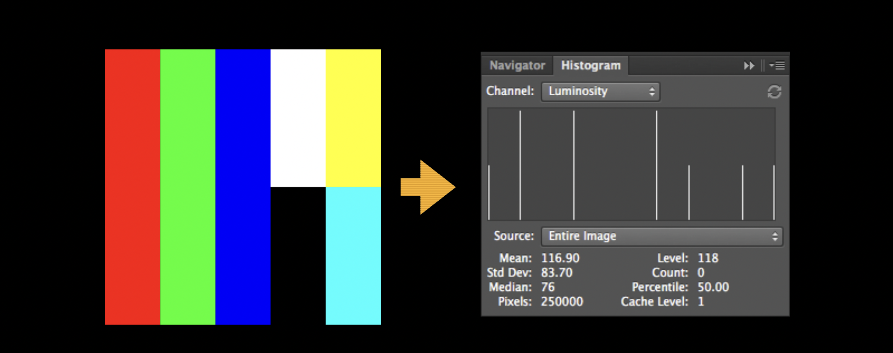
3. Other Histograms
除了 luminosity histogram，我们还可以统计图片的其它属性分布，如 RGB 对应的三个 channels：
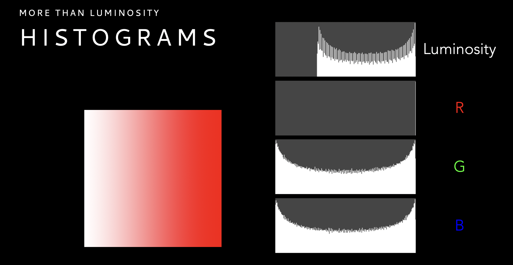
实践中更常用的是 colors histogram 和 RGB histogram：
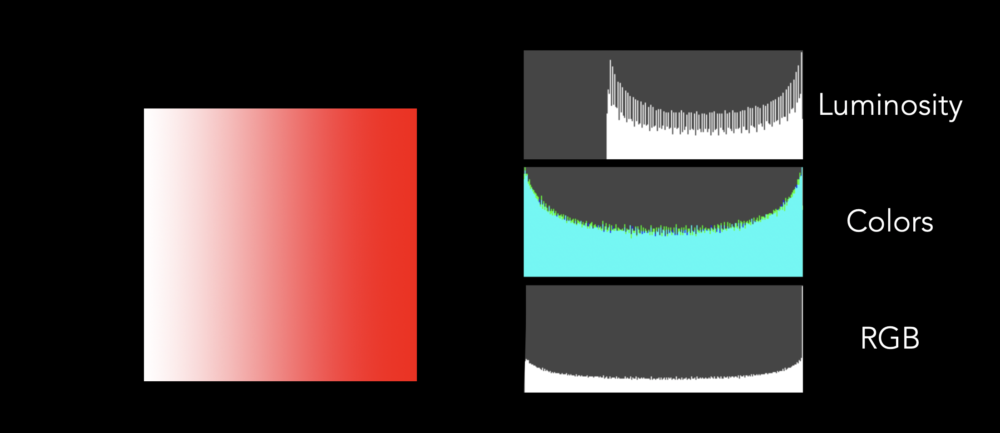
其中 colors histogram 是将三个 channels 的直方图重叠到一起；RGB histogram 是将三个 channels 的直方图叠加在一起。举例如下：


4. Dynamic Range
在摄影中，dynamic range 指的是图像中最亮的色调与最暗的色调之差，通常讨论的更多的是相机的 maximum dynamic range，是相机本身性能的参数之一，它的简化公式如下：
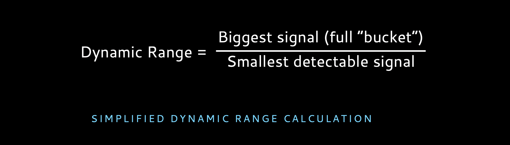
通常 dynamic range 使用 stop 数量来衡量。人眼可以感受的 dynamic range 约为 20 stops，这意味着人眼能感受到的「最暗的光」比其能感受到的「最亮的光」暗 100 万倍。这也是为什么人眼能在大白天，强光下，看到阴影中的细节。高端数码相机的 dynamic range 约为 14 stops，这意味着相机能感受到的「最暗的光」比其能感受到的「最亮的光」暗 1.6 万倍，相比人眼逊色很多。这也是为什么有时候我们在大光比场景下拍摄时，明明人眼都能看清细节，相机拍出来的照片确差强人意。
References
- Lecture 6: Histogram, slides
- Wikipedia: Histogram, Image Histogram
- What is Dynamic Range in Photography
- Cameras vs. The Human Eye
- Maximizing Dynamic Range